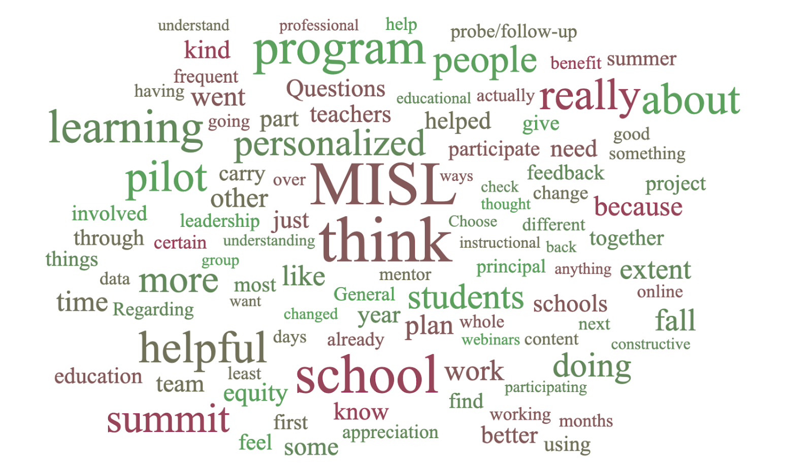

Findings
All three participants interviewed mentioned that the quick support provided by the mentorship component of MISL was useful in that it provided them with the affirmation to move forward with their projects.
Her [the mentor’s] personality meshed really well with our group, so we’re kind of tight and we do things our way, and she kind of got our way. We are kind of all over the place, and she was really good at keeping us organized and sending reminders. She just really understood what we’re doing and provided support quickly. I don’t know what they’d done with her really over the summer, but when I first met her it was like “just jump right in.”
Two out of the three participants interviewed indicated that there was a bit of confusion regarding what sort of program they were participating in, expressing a lack of clarity in some areas.
“Initially my principal asked for volunteers to join a group that we thought was for supporting technology in the classroom but when we went to the first meeting we found out it was a lot more than that and it was about what kind of technologies we could use to enhance the learning for our students.”
Additionally, two out of the three interviews indicated that time constraints were an issue, suggesting that the program may have been giving participants more than they could handle for their workload.
“[regarding webinars] I participated in only one or two of them because of time. The MISL program is a great program but it was hard to do everything that was offered to us, with some time constraints on our part.”
All three participants indicated that some degree of personalized learning had already been taking place at their respective schools before the execution of this program.
"We work from a work or school improvement plan. It has a lot of goals and benchmarks and action items that are in line with blended and personalized learning”
- Participant Profile
- Less than 50% were teachers. The rest were a diverse combination of roles spanning principals, vice principals etc.
- More than 70% have been working for 10 years or more. The surveyed cohort clearly has immense experience in the system.
- Most participants (19/28) have attended at least 2 summit sessions. 9 participants attended only one summit session.
- There is seemingly a drop in participants in the last session. Only 7 participants have attended 3 sessions.
- Most participants (21/28) have attended 4 or more coaching conversations.
- Utility Profile
- More than half of those surveyed (19/28 participants) viewed summit sessions as useful.
- Same number that viewed summit sessions useful (19/28) also thought coaching conversations were useful.
- Excitement Profile
- More than half (18/28 participants) said that they were still excited about participation
- 17/28 participants said that they were either very excited or extremely excited to attend the next coaching conversation.
- In both cases, at least 5 participants expressed that they were not excited for the next session / conversation.
- Pilot Projects
- All participants indicated that they had started working on the pilot project.
- 17/28 participants indicated that their project has moved from design to implementation and beyond.
- 11 participants indicated that their project is in either the ideation or design stage.
- Most participants 27/28 either said they agreed or strongly agreed that they received support from their team for their project.
- 19/28 participants either said they agreed or strongly agreed that were confident in launching a larger project.
- 23/28 participants either agreed or strongly agreed that they were able to implement the projects in their school.
- Education Equity
- Understanding of equity in education firmly rooted by those who responded, 24/28 participants.
- 23/28 felt confident to agree or strongly agree that they are capable of teaching the concept to others in their school.
- Personalized Learning
- Understanding of personalized learning also high (24/28 participants.)
- 21/28 felt confident to agree or strongly agree that they are capable of teaching the concept to others in their school.
- Qualitative Profile
- Text entry comments included many saying they appreciated the support and collaboration from MISL, only one comment centered on personalized learning
- The key ideas around what should be improved were again people saying that seeing other school's examples of personalized learning projects was useful, also more text entry indicating that expectations from MISL at the start of the school were not very clear
What can be improved about the MISL program?
What did participants like about the MISL program?
The existing data showed that 14 of the 17 schools indicated that their reason for implementing a personalized learning solution was to better serve students, while only 2 schools explicitly wrote up a pilot that directly addressed just their student body and 6 schools talked addressed students as a part of their pilot. 11 schools did not mention students at all in their actual solution or implementation plans. One possible interpretation of this is that these programs are new to personalized learning and are addressing change from a professional development standpoint. This could indicate the exposure a school has had to personalized learning, since only 3 schools explicitly indicated that they had participated in personalized learning professional development.
Our stakeholder indicated that equity and accessibility were important goals of their program. Upon analyzing the data, only 4 schools used terms like equity, equality, access, and accessibility more than 4 times in their pilot implementation reports, one interpretation is that most schools were focused more on issues that were unique to their schools, which did not necessarily overlap with issues that the MISL program emphasized. Another interpretation of this could be that participants were more focused at the problems at hand that could be solved in the short term, instead of tackling long term problems like equity and accessibility.
This instrument also yielded participants’ understanding of personalized learning. We coded for words and themes around student choice, student voice, student autonomy, etc. 11 schools used these words and themes more than 3 times in their report. One interpretation of this is that these are the common ways people talk about personalized learning and implementing such solutions. Schools seemed to have a good grasp of actual use of these terms and themes.